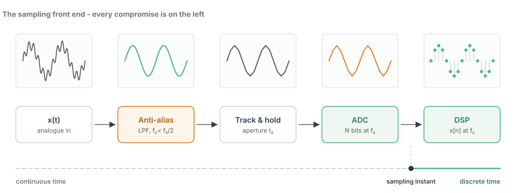
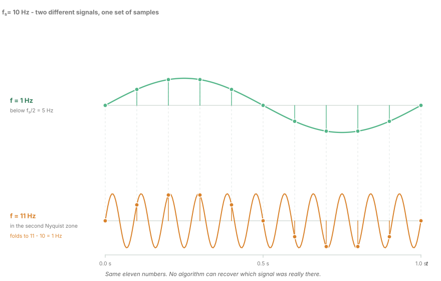
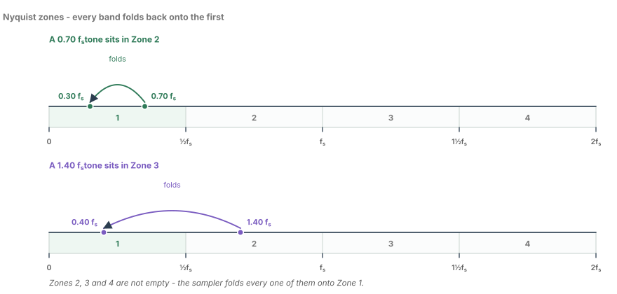
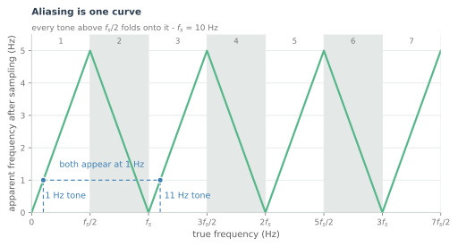
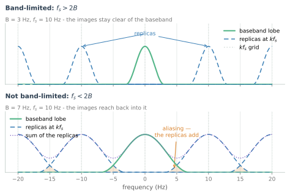
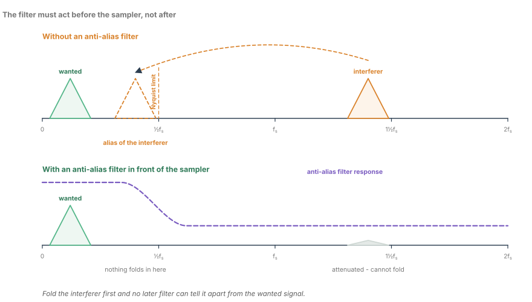
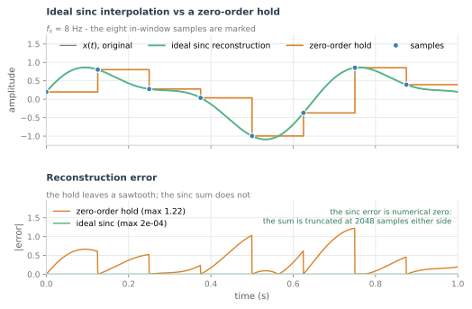
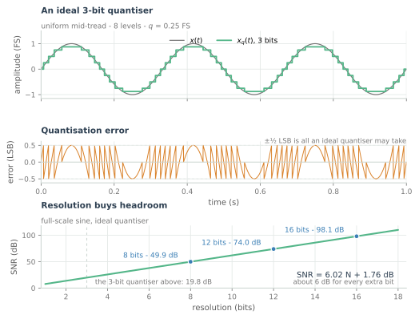

Sampling and Aliasing
The Nyquist-Shannon theorem derived from a picture, why an alias is indistinguishable from a real tone, and how anti-alias filtering saves the day.
Sampling looks like the easy part. You have a continuous voltage, you measure it every $T_s$ seconds, and you get a sequence of numbers. Everything after that is arithmetic, and arithmetic is exact.
It is not the easy part. Sampling is the only operation in the entire chain that is irreversible, and it is the only one where a mistake cannot be undone by any amount of cleverness downstream. Every filter, every equaliser, every fancy adaptive algorithm operates on the numbers the sampler handed it. If two different physical signals produce the same numbers, no algorithm can tell them apart — because from its point of view there is nothing to tell apart.
This chapter is about that moment, and about the one thing you must do before it.
The front end, in one picture

Read that figure from left to right and notice how quickly the compromises accumulate. The anti-alias filter band-limits the signal, which is a deliberate distortion. The track-and-hold freezes a moving target, which is an approximation. The ADC rounds to a finite grid, which is an error. Only the last block — the DSP — is exact.
The rest of this chapter takes the three blocks before the DSP one at a time. This is the one where the decision is permanent.
What sampling actually does
Take a continuous signal $x(t)$ and multiply it by an impulse train:
That multiplication is the whole of sampling. There is no averaging, no integration, no smoothing — an ideal sampler keeps the value at the instant and throws away everything in between.
The interesting part is what that does in the frequency domain. Multiplication in time is convolution in frequency, and the Fourier transform of an impulse train spaced $T_s$ apart is another impulse train spaced $f_s = 1/T_s$ apart. So the spectrum of the sampled signal is:
Everything that follows is a consequence of that one line.
Two signals, one set of samples
Here is the uncomfortable demonstration. Sample a 1 Hz sine and an 11 Hz sine at 10 Hz, and look at the numbers you get.

At $n/10$ seconds, the 1 Hz tone has value $\sin(2\pi n/10)$ and the 11 Hz tone has value $\sin(2\pi \cdot 11 n/10)$. But
The extra cycle per sample period is a whole number of turns, so it vanishes. The 11 Hz tone is not approximately the same as the 1 Hz tone after sampling. It is exactly the same sequence of numbers.
11 Hz is not a special case. It is what 1 Hz looks like when viewed through a sampler running at 10 Hz.
The folding rule
The general statement is a fold, and once you have seen it you will never need to look it up again.

The frequency axis is divided into Nyquist zones, each $f_s/2$ wide. Zone 1 is $[0, f_s/2]$ and is the only zone the sampler can actually represent. Every other tone is folded into it, and the folding rule is:
Plot that function and the geometry becomes obvious — it is a triangle wave in frequency, which is why aliasing is sometimes called frequency folding.

Two things are worth extracting from this curve.
Everything above $f_s/2$ is a lie. Not noise, not attenuation — a lie. A tone at $0.9 f_s$ arrives in Zone 1 pretending to be at $0.1 f_s$, at full amplitude, perfectly coherent. You cannot filter it out afterwards, because afterwards it is a legitimate low-frequency signal.
Only the first zone is unambiguous. Given the sample rate and the numbers, the only thing you can honestly say is "the true frequency was somewhere in the set $\{f_{\text{apparent}} + k f_s\}$". Choosing among those is a modelling decision, not a signal-processing one.
What it looks like on a spectrum analyser
The replicate-and-overlap picture is worth seeing directly, because it explains why aliasing is a sum rather than a substitution.

In the top panel the signal is band-limited to less than $f_s/2$. The replicas are separate, a filter can isolate the original, and reconstruction is possible.
In the bottom panel the signal is wider than $f_s/2$. The replicas overlap, and inside the overlap region the analyser shows the sum of two different parts of the original spectrum. That is the damage: not a missing band, but a band with someone else's energy mixed into it.
The filter that has to come first
Since everything above $f_s/2$ is going to fold into the band you care about, the obvious fix is to remove it before it gets the chance.

The placement is the whole point. An anti-alias filter must act on the continuous signal, before the sampler. After sampling, the interferer and the wanted signal are the same kind of object — numbers in a buffer — and no digital filter can separate them.
This gives the two constraints that actually determine the filter:
| Constraint | What sets it |
|---|---|
| Passband edge $f_p$ | Must pass the entire signal of interest, with acceptable ripple |
| Stopband edge $f_{st}$ | Must start attenuating before $f_s - f_p$, because that is what folds onto $f_p$ |
| Transition width | $\Delta f = f_{st} - f_p$ — the expensive number |
| Stopband attenuation | Set by how much alias energy your system can tolerate |
Note the asymmetry in that table. The stopband has to begin before $f_s - f_p$, not before $f_s/2$. A signal component at $f_s - f_p + \epsilon$ folds to $f_p - \epsilon$, right on top of your highest wanted frequency. This is why the anti-alias filter is always harder than it first appears, and why oversampling is so attractive: doubling $f_s$ doubles the room the filter has to roll off.
Getting the signal back
Reconstruction is the inverse operation, and the ideal interpolator is a sinc:

The sinc is not a practical filter — it is infinite, non-causal, and its impulse response decays as $1/t$. Every real DAC uses a zero-order hold and then cleans up the resulting droop and images with an analogue filter. But the picture is the right mental model: reconstruction is interpolation, and the samples are not the signal. They are the coefficients you rebuild it from.
Quantisation, in one page
Sampling discretises time. Quantisation discretises amplitude, and it is a genuinely different kind of error: unlike aliasing, it is bounded, it is roughly uncorrelated with the signal, and it can be averaged down.

For an ideal $N$-bit converter with a full-scale sinusoid input, and treating the error as uniform white noise over one least-significant bit, the signal-to-noise ratio works out to:
The 6 dB per bit is worth internalising. It means one extra bit buys you a factor of two in amplitude, which is exactly the same as halving your noise — and it costs you twice the comparators, twice the power, and often half the speed.
In the optical link
What to carry forward
- Sampling replicates the spectrum at every multiple of $f_s$. Aliasing is replicas overlapping and adding.
- Frequency content above $f_s/2$ is folded into the first Nyquist zone and is indistinguishable from legitimate in-band signal. It cannot be removed digitally.
- The anti-alias filter acts on the continuous signal, before the sampler. Its stopband must begin before $f_s - f_p$, not $f_s/2$.
- An ideal $N$-bit converter gives $6.02N + 1.76$ dB, and real ones give less. Design to ENOB.
- Reconstruction is sinc interpolation. The samples are coefficients, not the signal.
The next chapter takes the same signal and looks at it from the other side: instead of asking what frequencies are present, it builds the machinery that answers the question exactly — the Fourier transform, the DFT, and the FFT that makes it affordable.